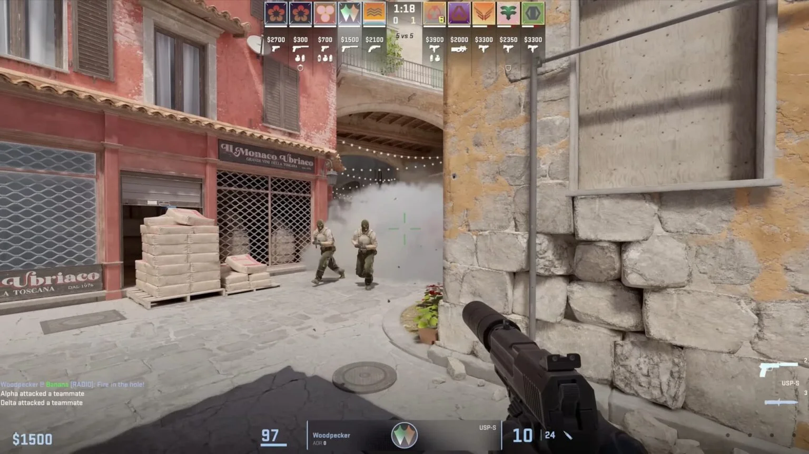
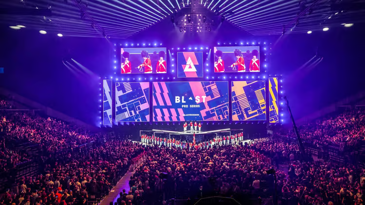
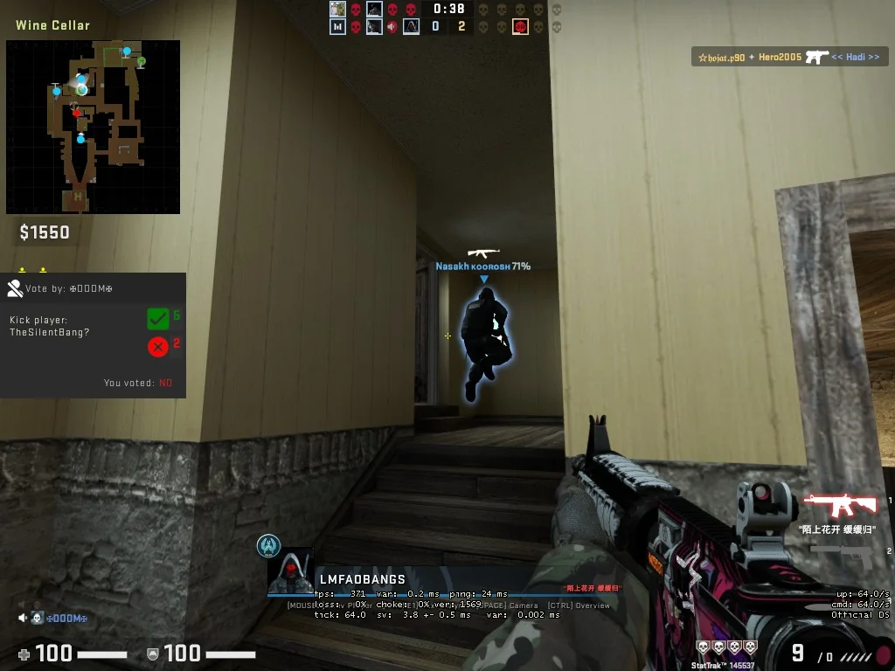

Conter Strike 2
Em 1999, o Counter-Strike foi lançado como uma modificação do jogo Half-Life. À medida que o Counter-Strike progrediu desde uma versão Beta até a um jogo completo lançado comercialmente, a jogabilidade clássica foi melhorada para algo que definiu os jogos de tiros competitivos e acabou por criar uma comunidade de jogadores dedicados que têm vindo a seguir o jogo durante mais de uma década.
Ao longo de cada uma das suas versões, (1.6, Source e Global Offensive) o Counter-Strike tem vindo a ser o ponto de referência definitivo do nível de perícia de um jogador. Equipas de todo o mundo estão constantemente a demonstrar as suas habilidades e estratégias em torneios locais, nacionais e internacionais.
Pode-se dizer que bastantes jogadores profissionais de Counter-Strike são autênticas lendas na comunidade internacional de jogos competitivos. Abaixo podes ver alguns vídeos sobre estes jogadores e como eles moldaram a História do Counter-Strike. Após o lançamento, Counter-Strike 2 recebeu críticas geralmente favoráveis dos críticos. Em contraste, a recepção dos jogadores foi mista; as críticas foram direcionadas à saída do Global Offensive do Steam, à degradação do desempenho do jogo e à remoção de vários recursos que estavam presentes no Global Offensive . Como resultado, Counter-Strike 2 recebeu milhares de avaliações negativas de usuários no Steam, tornando-o um dos títulos da Valve com classificação mais baixa na plataforma.
Enredo

O lançamento oficial aconteceu em 27 de setembro de 2023, como uma atualização gratuita para o Global Offensive.
O aprimoramento técnico de Counter-Strike 2 se dá a partir de seu motor gráfico, o Source 2. Lançado em 2015, o Source 2 é uma plataforma de desenvolvimento, capaz de aprimorar o que vemos em Global Offensive. Esse salto tecnológico será em um novo sistema de iluminação, texturas mais detalhadas, som tratado e remasterizado, além de um novo sistema anti-cheat VAC, para banir trapaceiros.
A atualização do motor de jogo apresenta inúmeras melhorias no áudio, nos gráficos e principalmente na renderização de texturas, iluminações e reflexos. Os clássicos mapas do jogo também foram otimizados usufruindo de todos os benefícios do novo motor, assim como os visuais de armas.
Conter Strike 2

Counter-Strike (CS) é uma série de jogos eletrônicos multijogador de tiro em primeira pessoa, no qual times de terroristas e contra-terroristas batalham entre si, respectivamente, realizando um ato de terror (explodindo bombas, fazendo reféns) e prevenindo-os (desarmando bombas, resgatando reféns). A série iniciou-se no Windows em 1999 com o lançamento do primeiro jogo, Counter-Strike. Foi inicialmente lançado como uma modificação ("mod") de Half-Life desenvolvida por Minh "Gooseman" Le e Jess "Cliffe" Cliffe, antes que os direitos de propriedade intelectual do jogo fossem adquiridos pela Valve, os desenvolvedores de Half-Life, que então transformou o Counter-Strike em um produto à venda lançado em 2000.
O Counter-Strike original teve como sequência o Counter-Strike: Condition Zero, desenvolvido pela Turtle Rock Studios e lançado em março de 2004. Uma versão anterior de Condition Zero que foi desenvolvida pela Ritual Entertainment foi lançada junto com ele como Condition Zero: Deleted Scenes. Oito meses depois, a Valve lançou o Counter-Strike: Source, uma recriação do Counter-Strike original e o primeiro da franquia a usar o novo motor Source criado pela Valve.[1] O quarto título da série principal, Counter-Strike: Global Offensive, foi lançado pela Valve em 2012 para Windows, OS X, Xbox 360, e PlayStation 3. Hidden Path Entertainment, que também trabalhou no pós-lançamento do Counter-Strike: Source, ajudou a produzir o jogo ao lado da Valve.[2] Counter-Strike 2 foi anunciado em março de 2023, com uma data de lançamento provisória para o verão de 2023.
Vários títulos derivados de terceiros foram criados para os mercados asiáticos ao longo dos anos. Isso inclui a série Counter-Strike Online, Counter-Strike Neo e Counter-Strike Nexon: Studio.
Jogabilidade

Jogabilidade e Estratégia
CS:GO é conhecido por sua jogabilidade desafiadora e estratégica. Os jogadores precisam dominar o controle de armas, aprender a economizar dinheiro virtual para comprar equipamentos e coordenar estratégias com suas equipes.
Modo Competitivo casual

Esta é a jogabilidade clássica que tornou o CS:GO famoso. Entra uma partida 5 contra 5 no formato melhor de 30 com as regras padrão competitivas do Counter-Strike num dos mapas clássicos. Podes entrar numa partida sozinho ou formar uma equipa e entrar numa partida juntamente com os teus colegas.
Modo Clássico Casual

Queres jogar Counter-Strike, mas não queres comprometer-te em jogar uma partida completa? Procura uma partida casual e joga ao teu próprio ritmo. No modo Casual, os jogadores recebem armadura e kits de desativação automaticamente e ganham dinheiro adicional por matarem adversários.
Corrida às Armas

O modo Corrida às Armas é um modo de progressão de armas onde reentras em jogo instantaneamente e onde também acabas muitas vezes por enfrentar os teus adversários de perto. Os jogadores são equipados com uma arma nova imediatamente após matarem um adversário. Mata um adversário com a última arma da sequência, uma faca dourada, para ganhares a partida.
Modo Demolição

No modo Demolição, os jogadores jogam várias rondas de ataque e defesa de um único alvo de bomba numa série de mapas concebidos para partidas rápidas. Os jogadores recebem automaticamente uma arma inicial e avançam através de uma sequência de armas sempre que matarem um adversário. Se achares que estiveres à altura do desafio, podes tentar matar um adversário em cada ronda e alcançar o patamar das armas derradeiras, as poderosas espingardas de sniper!